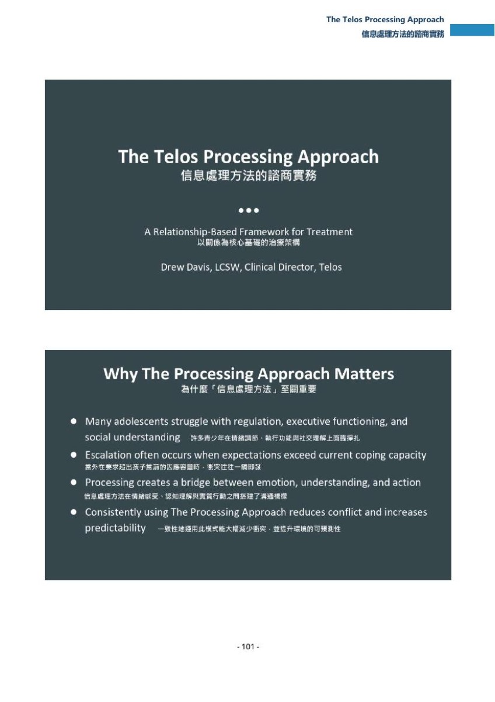
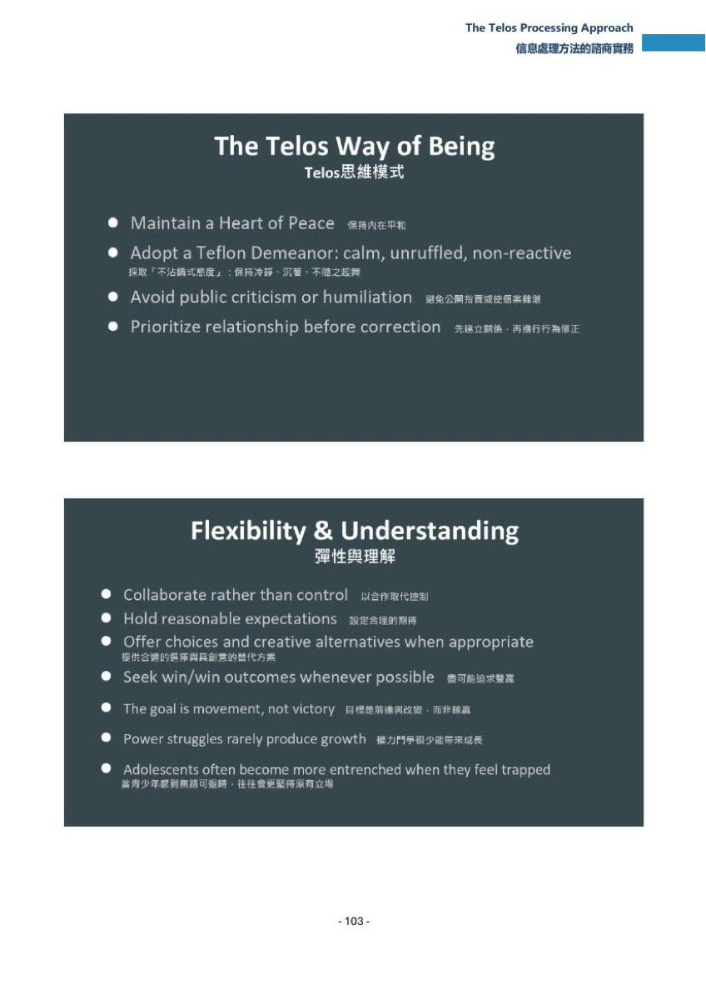
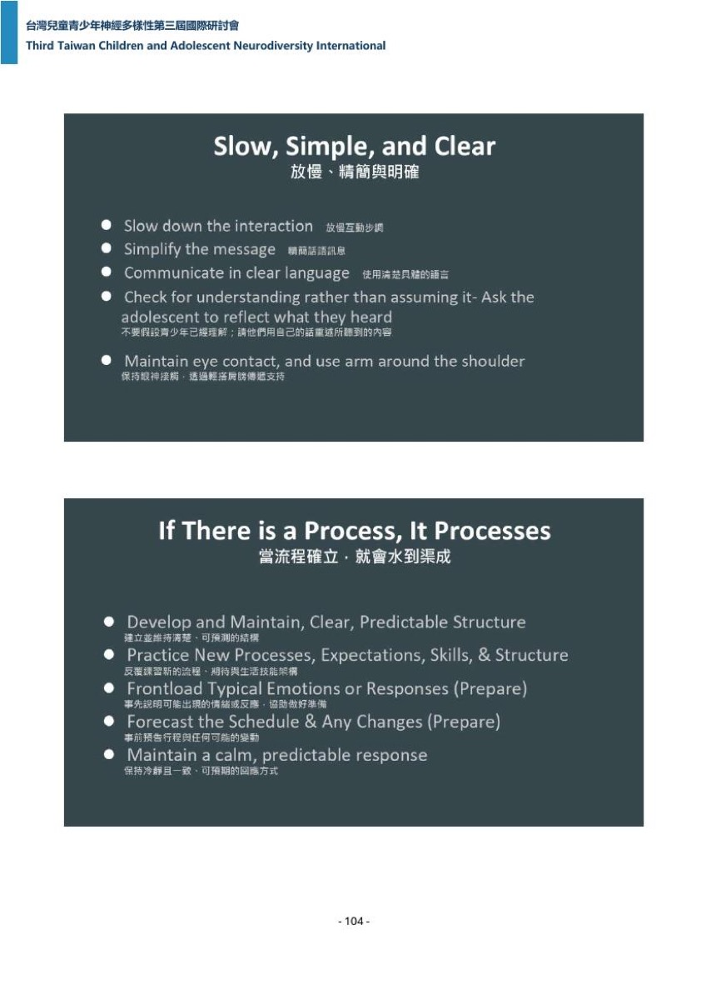
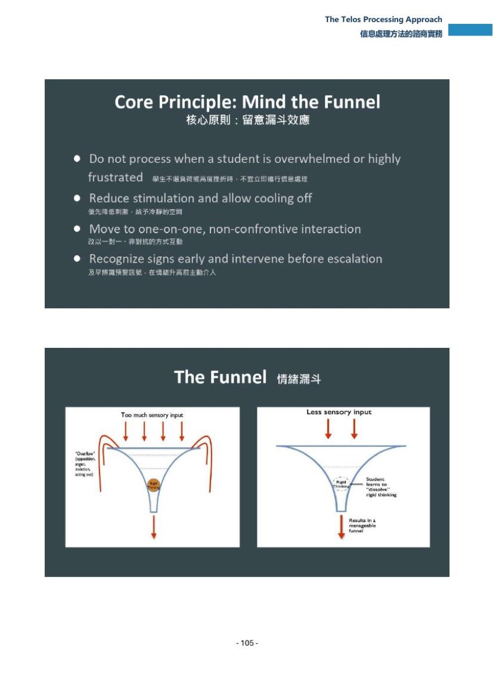
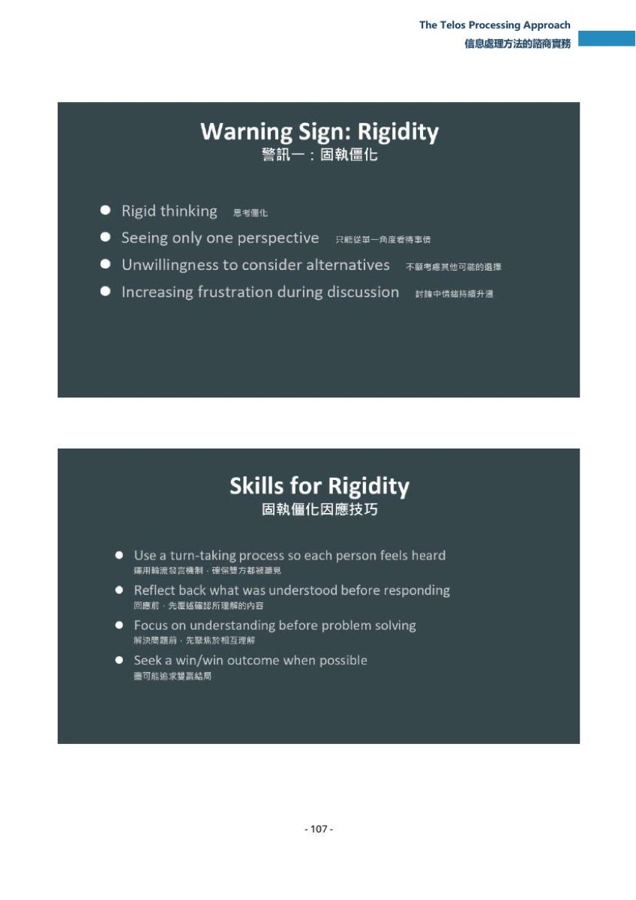

專題演講 · Session｜第 7 場
The Telos Processing Approach
信息處理方法的諮商實務
講者先回顧上午自己那場的四件事，再拋出本場樞紐問題：理解之後怎麼辦。
頁面內常見標記：推論／推定＝整理者依現有資料的推測，不是講者原話；（口譯）＝現場口譯員的中文，不是講者本人的話；【校正】＝聽打明顯聽錯之處，整理者改用正確字，保留原始聽寫可查。
要點
每條：主張（轉述，不加引號，用字以逐字稿為準、不用口譯字）／依據（逐字＋檔名:行號＋段#＋時戳）／歸屬等級（〇節（2））／單點時戳（〇節（3））。條目涵蓋區間長於錨點者，另寫出區間。
- 1｜[00:00:00]（二級：口譯對照 段#2，晚 15.2 秒／基準句 :3）（無對應投影片）
- 主張：檔案第一句就是講者回顧當天上午自己那一場（S04）講過的四件事——精準理解青少年、全面評估、個案概念化、建立穩固的治療關係——然後把本場定調為一個實務問題：理解只是開始，接下來該怎麼辦。
- 依據：:3（段#1，00:00:00,000–00:00:14,800）作 "We talked about the importance of understanding adolescents accurately, we discussed comprehensive assessment, thoughtful case conceptualization, and the importance of building strong therapeutic relationships."；:7（段#2，00:00:16,000–00:00:26,860）作 "But understanding adolescents is only the beginning. Once we understand why an adolescent is struggling, we are left with a very practical question. Now what?"
- 口譯對照：「我們講到了就是怎麼樣精準理解青少年」（口譯，:7，段#2，00:00:30,000–00:00:34,900）＋「然後我們討論的全範圍評估還有就是個案概念化」（口譯，:11，段#3）＋「還有如何建立生後治療和陪伴關係是很重要的」（口譯，:15，段#4）＋「就是現在我們到底該怎麼辦」（口譯，:31，段#8，00:00:53,300–00:00:55,600）。
- 同窗的 :11（段#3，28.0 秒合併長段）是上列口譯中文的英語解碼產物，不計為第二來源（〇節（1）根因①鐵證）。
- 與 S04 的交叉引用（只引 S04 已結案記錄有時戳的要點）：這四項對得上 要點 8（[00:17:24]，
p-070.jpg下半列五項特徵：全方位評估／精準個案概念化／穩固治療關係／個別化處遇方案／可衡量的成效評估）與要點 15（[00:49:01]，治療關係）。
- 2｜[00:00:55]（一級）（
p-102.jpg上半標題頁、下半 Why The Processing Approach Matters）
- 主張：本場的樞紐提問是——在日常時刻裡，當一個年輕人不知所措、僵化、社交上失聯、或單純拿不出我們都知道他會的技能時，我們怎麼回應？這些時刻天天發生在諮商、教室、家庭與住宿型機構。講者把 Telos 用在這些時刻的架構稱為 the processing approach。
- 依據（一級，兩份逐字稿各自單段、時窗重疊、起點差 0.04 秒）：:15（段#4，00:00:55,560–00:01:07,540，12.0 秒）／:35（段#9，00:00:55,600–00:01:08,600，13.0 秒）同作 "How do we respond in those everyday moments when a young person becomes overwhelmed, rigid, socially disconnected, or simply can't access the skills we know they possess?"（＝金句 S07_1）
- 依據（一級）："in therapy, in the classroom, in homes, and in residential treatment."（:19，段#5，00:01:08,440／:39，段#10，00:01:08,600）——兩份逐字稿在這句上只差一處拼寫：英文逐字稿作 every day（分寫）、中文逐字稿作 everyday（連寫），故一級字串只取上列共同片段。
- 依據（一級）："I'd like to share the framework we use at TELOS for these moments."（:23，段#6，00:01:15,820／:43，段#11，00:01:15,600）＋"We call it the processing approach."（:27，段#7，00:01:20,620／:47，段#12，00:01:20,600）
- 口譯對照（中文譯名）：「那我們把它稱作The Processing Approach」（口譯，:79，段#20，00:02:09,800）＋「就是我今天的講題」（口譯，:83，段#21）＋「那中文我們就把它翻成歷程梳理模式」（口譯，:87，段#22，00:02:13,840–00:02:17,320）。口譯的中文譯名（歷程梳理模式）與手冊／議程譯名（信息處理方法）不同。
- 投影片：手冊 C :39（
p-102.jpg下半）記 Why The Processing Approach Matters／為什麼「信息處理方法」至關重要，條列「許多青少年在情緒調節、執行功能與社交理解上面臨掙扎」。
- 3｜[00:03:09]（一級；本條依據涵蓋 [00:03:09]–[00:04:17]，錨點取首句）（無對應投影片）
- 主張：定調案例是一個轉過多間機構的學生，所有人對他的描述都一樣——對立、操弄、違抗；但讓講者驚訝的是他很聰明，清楚知道大人要他做什麼，他只是做不到。
- 依據（三級，引入句只在英文逐字稿）：:75（段#19，00:03:09,020–00:03:17,960）作 "Several years ago, we admitted a student who had already been through multiple programs."
- 依據（一級，四組，落在 00:03:52–00:04:03）："Oppositional, manipulative, defiant"（:83，段#21，00:03:52,060／:167，段#42，00:03:42,080）＋"What surprised me was how intelligent he was"（:87，段#22，00:03:54,860／:171，段#43，00:03:54,280）＋"He knew exactly what adults wanted him to do"（:91，段#23，00:03:58,440／:175，段#44，00:03:57,460）＋"He simply couldn't do it"（:95，段#24，00:04:01,600／:179，段#45，00:04:01,120）
- 口譯對照（晚 0.1 秒／基準句 :95）：「這個孩子他展現了高度的反抗性,對立性,可是令我驚訝的是這個孩子其實他很聰明,他很清楚知道大人希望他做什麼,他只是沒有辦法穩定持續地做到」（口譯，:183，段#46，00:04:03,280–00:04:17,780）
- 現場插曲（一級）：講者在此處投影片出狀況——"Hold on, it's missing some of my slide here"（:79，段#20，00:03:39,020／:163，段#41，00:03:37,220）。
- 4｜[00:04:18]（一級＋二級；本條依據涵蓋 [00:04:18]–[00:05:37]，錨點取首句）（無對應投影片）
- 主張：多數青少年知道的遠多於他們能穩定做到的——知道不該對父母大吼、知道該用諮商裡練過的技巧、知道該有禮貌溝通、知道該在崩潰前求助，卻還是一再犯同樣的錯。講者說他早期因此很挫折，以為講清楚、教夠技巧、要求夠嚴就會改善；後來他意識到問題通常不在知識，而在表現。
- 依據（三級）：:103–:115（段#26–#29，00:04:18,020–00:04:39,620）逐段列出上述四種「知道」；:131（段#33，00:05:22,020–00:05:29,020）作 "Over time, I realized something important. The problem usually wasn't knowledge. The problem was performance."
- 依據（一級，兩組）："I assumed that if I explained things clear enough,"（:123，段#31，00:05:10,020／:195，段#49，00:05:05,760，12.3 秒合併長段）＋"The problem usually wasn't knowledge"（:131，段#33／:199，段#50，00:05:18,060）
- 依據（三級）：:135（段#34，00:05:29,020–00:05:37,020）作 "Many adolescents simply could not access the skills they already knew they had before they became emotionally overwhelmed."
- 口譯對照（晚 7.1 秒／基準句 :115）：「比如說他們知道不應該對父母大吼大叫,他們知道他們應該要去使用諮商中練習過的技巧,然後他們知道應該隨時保持禮貌溝通,然後他們也知道應該要在情緒崩潰前去主動尋求協助,可是他們還是會犯下重複的錯誤。」（口譯，:191，段#48，00:04:46,740–00:05:05,760，19.0 秒合併長段）
- 口譯對照（晚 24.9 秒／基準句 :131）：「那隨著時間的演進 我意識到一些很關鍵的事情」（口譯，:219，段#55，00:05:53,900）＋「就是知意行難」（口譯，:223，段#56）＋「問題在於不在於你擁有足夠的知識」（口譯，:227，段#57）＋「而是在於你實踐表現上面有困難」（口譯，:231，段#58）。上列段#56 的口譯用字，通行成語為知易行難，研判為聽寫或口誤。
- 5｜[00:06:10]（一級）（
p-102.jpg下半）
- 主張：講者請聽眾想想自己帶的青少年——許多人卡在情緒調節，有些是執行功能困難，有些被壓力淹沒，有些誤讀社交情境，有些在計畫突然改變時難以調適；他強調這些是反覆出現的模式、【研判】不是孤立事件（英文逐字稿字面缺一個 not，見依據欄與）。
- 依據（一級，四組）："Many struggle with emotion regulation."（:143，段#36，00:06:10,020／:239，段#60，00:06:12,520）＋"Others have executive functioning challenges."（:147，段#37，00:06:15,020／:243，段#61，00:06:15,100）＋"Some have become overwhelmed by stress."（:147，段#37／:247，段#62，00:06:17,640）＋"or have difficulty adapting when plans change unexpectedly."（:151，段#38，00:06:20,020／:255，段#64，00:06:21,800）
- 依據（三級，且語意有疑）：:155（段#39，00:06:27,020–00:06:31,660）作 "These are isolated problems, they are reoccurring patterns." ——與上下文語意相反，研判漏掉 not（同窗中文逐字稿 :259 段#65 作「這些是遺棄的問題,他們是重複的狀況。」亦為破碎機器中譯）。列；本條主張句依語境寫成不是孤立事件，並在此標明該判讀。
- 依據（三級）：:159（段#40，00:06:57,020–00:07:12,940，15.9 秒合併長段）作 "This is the TELOS processing approach. It gives parents, clinicians, and even students a comprehensive understanding of best practices when a student struggles due to processing or neurodiverse issues."
- 口譯對照（晚 26.1 秒／基準句 :155）：「這就是我們Telos的processing approach,它就是為了家長和臨床人員和學生提供的一套最佳的方法。」（口譯，:263，段#66，00:06:57,740–00:07:27,720，30.0 秒合併長段）
- 6｜[00:08:24]（一級＋二級；本條依據涵蓋 [00:08:24]–[00:11:00]，錨點取首句）（
p-103.jpg下半 What is The Processing Approach?）
- 主張：講者要求團隊做的最大一個轉變是：不要再問我要怎麼讓這個青少年停止這個行為，改問這個青少年在什麼事情上想做成功卻做不到、缺哪些技能。一旦看清缺的技能，大人的角色就變了——不再是要贏得爭論、不再是要逼出順從，而是變成老師；每一次互動都成為幫他建立一項在療程結束後仍受用的技能的機會。這就是為什麼這套方法是以關係為本：青少年很少因為大人比較大聲而學會，他們學會是因為大人安全、可預測、且真心投入幫他們成功。
- 依據（一級，三組）："we ask our staff to make is this"（:191，段#48，00:08:24,600–00:08:49,660，25.1 秒合併長段／:351，段#88，00:08:44,040–00:09:13,800，29.8 秒合併長段）＋"adolescent to stop this behavior and start asking what is this adolescent"（:195，段#49，00:08:49,660／:351）＋"struggling to do successfully"（:199，段#50，00:08:54,100／:351）。兩份逐字稿首句用字不同：英文逐字稿作 shifts、中文逐字稿保留段作 tips，故一級字串自 we ask 起算。
- 依據（三級）：:211（段#53，00:09:10,900–00:09:17,260）作 "force compliance. We become teachers. Every interaction becomes an opportunity"；:219（段#55，00:09:47,260–00:10:15,760，28.5 秒合併長段）作 "That is why we say the processing approach is relation-based."；:223（段#56，00:10:15,760–00:10:29,700）作 "Adolescents rarely learn because adults are louder."
- 口譯對照（晚 13.7 秒／基準句 :211）：「是我們會要大家不要再問這個問題」（口譯，:359，段#90，00:09:30,980）＋「我們要如何讓這個孩子停止這個不恰當的行為」（口譯，:363，段#91）＋「而是要問我們說這個孩子在順利打成目標上遇到什麼樣的阻礙」（口譯，:367，段#92）＋「他目前缺乏了哪一項關鍵的技能」（口譯，:371，段#93）＋「我們變成了陪伴他們學習的教師」（口譯，:391，段#98）
- 口譯對照（晚 8.2 秒／基準句 :223）：「青少年不會因為你比他大聲然後就順服你」（口譯，:419，段#105，00:10:37,880）；（晚 22.2 秒／基準句 :223）「所以processing approach不是結束之後才做的事情」（口譯，:435，段#109，00:10:51,880）＋「它就是發生當下可以使用的具體方式」（口譯，:439，段#110）
- 投影片：手冊 C :41（
p-103.jpg下半）記「一套結構化、以關係為本的介入模式；聚焦教技能而非強迫服從；及早、冷靜、合作時最有效」。
- 7｜[00:11:00]（一級＋二級；本條依據涵蓋 [00:11:00]–[00:14:33]，錨點取首句）（
p-104.jpg上半 The Telos Way of Being）
- 主張：第一個支柱是 way of being——在青少年記得我們說了什麼之前，他們先記得我們給了什麼感受。第一原則是保持和平之心：青少年在發展出自己的情緒調節能力之前，會先借用大人的；大人一焦慮、一挫折、一反應過度，孩子只會更失調，大人保持冷靜就是在傳遞安全。第二原則是不沾鍋的態度：青少年有時說傷人的話、測試界線、挑戰權威，若每句話都黏在我們情緒上，我們就開始反擊而不是教；像不沾鍋一樣讓它滑掉，不是因為不在乎，而是因為焦點要留在幫他學會。第三原則是不當眾糾正，因為公開糾正製造羞恥。
- 依據（三級）：:239（段#60，00:11:00,760–00:11:05,760）作 "Before the adolescent people remember what we say, they remember how we made them feel."（adolescent people 研判為 adolescents 的聽寫誤，列）；:251（段#63，00:11:14,760）作 "words are, but we remember how they treated us. At Telos, we call this the way of being."；:283（段#71，00:13:05,440–00:13:18,260）作 "Adolescents sometimes say hurtful things. They test boundaries. They challenge authority. If every comment sticks to us emotionally, we begin reacting instead of teaching."；:287（段#72，00:13:19,260）作 "Like a Teflon pan, we allow these comments to slide off."；:335（段#84，00:14:15,960）作 "Public correction often creates shame."
- 依據（一級，兩組）："The second principle is Teflon Demeanor"（:271，段#68，00:12:10,440–00:12:33,440，23.0 秒合併長段／:499，段#125，00:12:30,640）＋"I lost the part"（:275，段#69，00:12:33,440／:503，段#126，00:12:33,640）——後者是講者第二次遇到投影片問題。
- 口譯對照（晚 45.0 秒／基準句 :239）：「他其實會記住的是我們給他怎麼樣的感受」（口譯，:447，段#112，00:11:50,720）＋「我們會把這個稱作Way of Being」（口譯，:479，段#120）＋「中文可以說是一個內在同在的狀態」（口譯，:483，段#121）
- 口譯對照（晚 53.4 秒／基準句 :267）：「和平之心就是Heart of Peace」（口譯，:515，段#129）＋「就是青少年在發展出自身的情緒調節能力之前」（口譯，:523，段#131，00:12:43,640）＋「如果我們大人自己先焦慮或是情緒反應過度」（口譯，:531，段#133）＋「孩子只會更加失調」（口譯，:535，段#134）
- 口譯對照（晚 0.8 秒／基準句 :287）：「第二個原則是不沾鍋的態度。」（口譯，:579，段#145，00:13:29,340）＋「就是要冷靜、沉著,然後不隨之起舞。」（口譯，:591，段#148）；（晚 17.8 秒／基準句 :335）「因為公開糾正往往會讓當事人產生羞恥感」（口譯，:635，段#159，00:14:37,060）
- 根因①鐵證就在本條區間：:291–:319（段#73–#80，00:13:35,440–00:14:02,440）連續 8 段輸出 in a cup of water 迴圈，對應的是口譯員講不沾鍋的那段中文（枚舉見查核（四）#6）。
- 投影片：手冊 C :42（
p-104.jpg上半）記「保持內在平和；採取不沾鍋式態度（冷靜沉著不隨之起舞）；避免公開指責；先建立關係再進行行為修正」。p-103.jpg上半 Telos 官方圖卡另印〔Way of Being: Heart of Peace (Get out of the box) / Teflon Demeanor (unruffled) / No Public Criticism〕（整理者核對原始檔案，不在手冊 C 逐字欄內，故不加引號）。
- 8｜[00:14:51]（二級；本條依據涵蓋 [00:14:51]–[00:18:13]，錨點取首句）（
p-104.jpg下半 Flexibility & Understanding）
- 主張：第二個支柱是彈性與理解。最常見的模式是僵化——非黑即白、全有全無，有時看起來像違抗；孩子確信只有一種可接受的結果（他的那一種），而大人往往同樣僵化地回應，對話就變成權力鬥爭。Telos 常用的一句話是：僵化加僵化永遠不等於彈性——沒有人學到、沒有人成長、每個人帶著挫折離開。保持彈性不等於降低標準或期待，而是改變我們協助青少年達到那些期待的方式：合作取代控制、先求理解再解決問題、盡可能找雙贏、記得目標是前進而不是取勝。講者還說，青少年一旦覺得被理解，就會展現出驚人的彈性；理解不等於同意，而是傳達我看見你的掙扎、我願意陪你走過——這個小轉向常常改變整段對話，因為理解降低防衛，而防衛阻礙學習。
- 依據（三級）：:351（段#88，00:14:51,660）作 "One of the most common patterns we see is rigidity."；:407（段#102，00:16:00,100–00:16:12,100）作 "One phrase we often use at Telos is rigidity plus rigidity never equals flexibility."；:411（段#103，00:16:12,100）作 "Flexibility does not mean lowering our standards or expectations."；:415（段#104，00:16:20,100–00:16:33,100）作 "we collaborate instead of control, we seek understanding before problem solving, we look for a win-win whenever possible, we remember our goal is movement, not victory."；:435（段#109，00:17:12,480）作 "I found that adolescents become remarkably more flexible when they feel understood."；:439（段#110，00:17:18,900）作 "Understanding does not mean agreement."
- 依據（一級，五組，落在 00:17:21–00:17:43）："I see your struggle, and I am willing to work with you through it."（:447，段#112，00:17:22,980／:775，段#194，00:17:21,380；＝金句 S07_2）＋"That simple shift changes how the entire conversation goes often."（:451，段#113／:779，段#195）＋"Understanding reduces defensiveness."（:455，段#114／:783，段#196）＋"Defensiveness prevents learning."（:459，段#115／:787，段#197）＋"Even with the right mindset and flexibility, one mistake can still prevent learning."（:463，段#116／:791，段#198）
- 口譯對照（晚 11.5 秒／基準句 :407）：「我們在T-Low的時候常常會說,硬度加硬度就是兩個都輸,就不會有彈性產生。」（口譯，:735，段#184，00:16:23,580–00:16:53,560，30.0 秒合併長段）；（晚 23.3 秒／基準句 :415）「比如說我們可以用合作取代控制」（口譯，:743，段#186，00:16:56,420）＋「然後在急於解決問題之前我們先追求理解」（口譯，:747，段#187）＋「而不是在這場爭論中誰取得勝利誰就贏」（口譯，:759，段#190）
- 口譯對照（晚 33.0 秒／基準句 :447）：「那我們去理解他們不代表我們就是要全盤同意他們」（口譯，:811，段#203，00:17:59,280）＋「而是要傳達說看見了你的掙扎」（口譯，:815，段#204，00:18:03,180）＋「然後我願意陪你去克服」（口譯，:819，段#205）
- 口譯命名：「然後在TELOS Processing Approach的第二個支柱」（口譯，:667，段#167，00:15:23,820）＋「叫做Flexibility Understanding」（口譯，:671，段#168）
- 投影片：
p-103.jpg上半 Telos 官方圖卡印〔Flexibility & Understanding: Be willing to collaborate (80/20 = win/win = synergy) / Use talking stick to move beyond rigidity / Have reasonable expectations / Give Choices & Be Creative / Rigid + Rigid = Lose/Lose〕（整理者核對原始檔案）——最後一條與講者口述的 rigidity plus rigidity 一句同義。手冊 C :43（p-104.jpg下半）記「以合作取代控制；目標是前進與改變而非輸贏；權力鬥爭很少能帶來成長；青少年感到無路可退時往往更堅持原立場」。
- 9｜[00:18:25]（一級＋三級；主張句開頭那句觀察由三級的 :479 單獨承載；本條依據涵蓋 [00:18:25]–[00:21:19]，錨點取首句）（
p-105.jpg上半 Slow, Simple, and Clear）
- 主張：第三個支柱是放慢、精簡、明確。講者多年來的觀察是：大人常把互動弄得比青少年當下能處理的更複雜——孩子挫折、焦慮或情緒滿載時，大人的直覺是解釋更多、重複自己、補更多理由、說服或說教；但大腦超載時，更多話很少換來更多理解。正確的做法是慢下來、少用字、有意識；一次總結一個概念、用具體語言，並且常常請青少年把聽到的內容複述回來，而不是問你懂了嗎——前者檢查理解，後者只檢查同意。距離與姿態同樣重要：平靜的語調、眼神接觸、走在學生旁邊，而不是站在他上方對他說話。
- 依據（一級，五組）："Unfortunately, when the brain is overwhelmed, more words rarely produces more understanding."（:491，段#123，00:18:50,300／:851，段#213，00:18:50,080；＝金句 S07_3）＋"Instead, we need to slow down, use fewer words, be intentional."（:495，段#124，00:18:56,980／:855，段#214，00:18:56,980）＋"At Telos, we summarize one idea at a time."（:499，段#125／:859，段#215）＋"rather than asking, do you understand?"（:507，段#127／:867，段#217）＋"Those are very different questions."（:511，段#128／:871，段#218）
- 依據（三級）：:479（段#120，00:18:25,540–00:18:35,540）作 "One observation I made over the years is that adults often make that interaction more complicated than adolescents, is at least to handle complexity."；:487（段#122，00:18:42,540）作 "We repeat ourselves. We give it additional reasoning. We try to convince, or we lecture."；:515（段#129，00:19:18,000）作 "One checks for agreement, the other checks for understanding."；:523（段#131，00:19:25,660）作 "A calm voice, eye contact, and walking alongside the student communicates safety rather than"
- 口譯對照（晚 24.4 秒／基準句 :511）：「那processing approach第三個支柱是放慢、經節、明確化你的指示還有對話的方式」（口譯，:915，段#229，00:19:42,400–00:19:51,400）
- 口譯對照（晚 75.5 秒／基準句 :515）：「引導孩子去複述說」（口譯，:987，段#247，00:20:37,980）＋「而不是隻是問他說」（口譯，:999，段#250）＋「你到底聽懂了沒」（口譯，:1003，段#251）＋「因為前者是在尋求他們的同意」（口譯，:1007，段#252）＋「那後者才是真正在問他們理解了沒」（口譯，:1011，段#253）＋「也許也可以輕輕搭到他們肩膀」（口譯，:1035，段#259）
- 投影片：手冊 C :44（
p-105.jpg上半）記「放慢互動步調、精簡話語；請青少年用自己的話重述所聽到的內容以確認理解；保持眼神接觸並透過輕搭肩膀傳遞支持」。
- 10｜[00:21:20]（一級；本條依據涵蓋 [00:21:20]–[00:22:19]，錨點取首句）（
p-105.jpg下半 If There is a Process, It Processes）
- 主張：第四個支柱是把流程立起來。講者說，和焦慮、執行功能困難或自閉特質的人相處教會他一件事：可預測性會降低壓力。當期待一直變，情緒能量全花在猜下一步而不是學習。所以要預告一天的行程、把難談的對話先講在前面、在變動發生前先讓學生準備、反覆練習常規直到熟悉。可預測的環境創造心理安全，心理安全讓學習成為可能；目標不是移除每一個挑戰，而是移除不必要的不確定性。
- 依據（三級）：:623（段#156，00:21:20,160–00:21:28,160）作 "One thing that adults with anxiety, executive functioning challenges, or autism have taught me is that predictability lowers stress."（adults 研判為 adolescents 的聽寫誤，列）；:651（段#163，00:22:05,960）作 "Our goal is to remove unnecessary uncertainty so adolescents can focus on developing new skills."
- 依據（一級）："and psychological safety makes learning possible"（:647，段#162，00:21:58,840／:1067，段#267，00:21:59,180）
- 依據（兩份逐字稿句讀不同，不計一級）：中文逐字稿保留的 "we practice routines repeatedly until they become familiar"（:1059，段#265，00:21:49,180）在英文逐字稿被切成 :639 段尾與 :643 段首，且英文逐字稿把 routines 聽寫成 leads。
- 口譯對照（晚 1.6 秒／基準句 :655）：「第四個方法的支柱是要把流程確立起來。」（口譯，:1087，段#272，00:22:21,180）＋「教會有一件事情就是幫他們創造可預測性」（口譯，:1095，段#274）＋「可以大幅降低他們的焦慮還有壓力」（口譯，:1099，段#275）＋「比如說我們可以做預告一整天」（口譯，:1127，段#282）＋「這樣就可以幫助孩子掃除不必要的不確定性」（口譯，:1163，段#291）
- 投影片：手冊 C :45（
p-105.jpg下半）記「建立並維持清楚可預測的結構；事先說明可能情緒反應並預告行程變動；保持冷靜且一致、可預期的回應方式」。p-103.jpg上半圖卡另印〔If There is a Process, It Processes: Develop & maintain clear, consistent, predictable structure / Practice new processes, expectations, skills & structure / Frontload typical emotions or responses (prepare) / Forecast the schedule & any changes (prepare)〕（整理者核對原始檔案）。
- 11｜[00:23:26]（一級＋二級；本條依據涵蓋 [00:23:26]–[00:27:32]，錨點取首句）（
p-106.jpg上半 Core Principle: Mind the Funnel、下半 The Funnel）
- 主張：核心原則是留意漏斗。講者說時機很重要，這可能是整套方法裡最重要的概念——青少年情緒淹沒時，思考、推理、解決問題的能力都受限，在那個當下教常常無效。想像一邊往漏斗灌資訊、一邊有人把出口堵住，很快就滿出來。首要責任是先降低情緒強度：降低刺激、把觀眾移開、協助他調節，然後才開始教。目標不是避開難談的話，而是等大腦準備好學習時再談。接著他把大腦本身比作漏斗：上半部是工作記憶（把資訊擺在腦前並運用的能力），出口是訊息處理（接收、理解、運用資訊的能力）；分數有落差、或有 ADHD、學習障礙、神經多樣性時，漏斗會被堵住、出口會變窄，理解與處理就卡住，孩子便發出警訊。
- 依據（一級，六組）："moment is often ineffective"（:711，段#178，00:24:08,860／:1199，段#300，00:24:08,360）＋"information into a funnel while somebody plugs the hole"（:715，段#179，00:24:14,980／:1203，段#301，00:24:14,740）＋"I like to think of our brain as a funnel"（:823，段#206，00:26:34,260–00:26:49,780，15.5 秒合併長段／:1335，段#334，00:26:46,620）＋"I spoke of the IQ scores"（:827，段#207，00:26:49,780／:1339，段#335，00:26:49,780）＋"the ability to hold information at the forefront of my mind"（:839，段#210，00:27:01,500／:1359，段#340，00:27:01,860）＋"think of the spout of the funnel"（:843，段#211，00:27:07,120／:1367，段#342，00:27:05,640）
- 依據（三級）：:719（段#180，00:24:21,100）作 "Our responsibility is first to reduce emotional intensity."；:727（段#182）作 "We move away an audience."；:751（段#188，00:24:44,580）作 "Regulation almost always comes before reflection."；:855（段#214，00:27:26,780）作 "It can't halt my understanding or processing. When this happens, we show warning signs."
- 英文逐字稿此段首句的用字有疑：:699（段#175，00:23:26,700–00:23:56,680，30.0 秒合併長段）作 "Time matters. This may be one of the most important concepts in the entire processing world."，而中文逐字稿同窗保留的英語 :1187–:1191（段#297–#298）作 "timey matters this may be one of the most important concepts in the entire" ＋ "processing approach when adolescents become emotionally overwhelmed their"——兩份逐字稿在 world／approach 上不一致；本條主張句不採用該句。
- 口譯對照（晚 66.1 秒／基準句 :711）：「所以就是我把它形容成這個Minder Follow」（口譯，:1219，段#305，00:25:21,060）＋「就是像是那個情境就很像是一個漏斗」（口譯，:1227，段#307）＋「當你把那個漏斗的底部堵住的話」（口譯，:1231，段#308）
- 口譯對照（晚 85.3 秒／基準句 :719）：「我們的首要任務應該是要降低他情緒的強度」（口譯，:1267，段#317，00:25:51,140）＋「你可以降低外在環境的刺激」（口譯，:1275，段#319）＋「或是說把他帶離群眾視線」（口譯，:1279，段#320）＋「然後再來做反思跟反省」（口譯，:1291，段#323）
- 口譯對照（晚 20.2 秒／基準句 :835）：「讓漏斗的上半部代表著Working memory 就像是工作記憶」（口譯，:1391，段#348，00:27:21,700）＋「出口它是代表processing」（口譯，:1407，段#352）＋「那如果今天這個孩子他可能有ADHD」（口譯，:1419，段#355）＋「這個漏斗的出口通常會比較窄」（口譯，:1427，段#357）
- 投影片：手冊 C :46（
p-106.jpg上半）記「學生不堪負荷或高度挫折時不宜立即進行信息處理；優先降低刺激、給予冷靜空間；及早辨識預警訊號並在情緒升高前主動介入」；:47（p-106.jpg下半）逐字含「Too much sensory input」「Rigid Thinking」「Less sensory input」「Results in a manageable funnel」。
- 12｜[00:27:56]（一級；本條依據涵蓋 [00:27:56]–[00:30:41]，錨點取首句）（
p-107.jpg上半 Recognizing Warning Signs、下半 When to use The Processing Approach）
- 主張：這套方法是主動而非被動的——不等危機完全成形，而是及早辨認反覆出現的模式。講者說多年下來他找出六個一再出現的模式：固執僵化、壓力敏感、抓不到重點、執行功能困難、社交困難、適應變動與轉換困難。他強調這些不是標籤而是指標，每一個都指向一組需要被強化的生活技能；看到這些模式時，目標不是立刻糾正行為，而是認出青少年當前的技能已經跟不上情境的要求，先放慢、變得好奇、辨認缺了哪一項生活技能，再決定怎麼回應。
- 依據（三級）：:859（段#215，00:27:56,780–00:28:22,080，25.3 秒合併長段）作 "The processing approach is proactive rather than reactive."；:867（段#217，00:28:24,980–00:28:32,980）作 "Over the years, I've found six patterns that appear again and again."；六項逐段枚舉為 :871（段#218，作 "Purgility."，研判為 Rigidity 的聽寫誤，列）、:875（段#219，"Stress sensitivity."）、:879（段#220，"not getting it,"）、:883（段#221，"executive functioning difficulties,"）、:887（段#222，"social struggles,"）、:891（段#223）。
- 依據（一級，八組）："and difficulty with changes and transitions."（:891，段#223，00:29:05,120／:1471，段#368，00:29:05,300）＋"These are not labels, they are indicators."（:895，段#224，00:29:12,240／:1475，段#369，00:29:12,340）＋"Each one points towards a different set of life skills"（:899，段#225／:1479，段#370）＋"that need to be strengthened."（:903，段#226／:1483，段#371）＋"As we go through each pattern,"（:907，段#227，00:29:21,340／:1487，段#372）＋"Ask yourself, what pattern do I see most often,"（:911，段#228，00:29:26,040／:1499，段#375）＋"Patterns are invitations to teach, not simply problems to solve."（:915，段#229，00:29:33,540／:1511，段#378，00:29:33,600；＝金句 S07_4）＋"Let's begin with one of the most common patterns we encounter."（:919，段#230／:1515，段#379）
- 依據（一級，四組，[00:30:15]–[00:30:41]）："When we see these patterns, the goal is not to immediately correct behavior"（:931，段#233，00:30:15,340／:1535，段#384，00:30:14,400）＋"The goal is to recognize that adolescents' current skills"（:935，段#234／:1539，段#385）＋"are no longer matching the demands of the situation"（:935，段#234／:1543，段#386）＋"The processing approach asks us to slow down, become curious"（:939，段#235，00:30:27,980／:1547，段#387）
- 口譯對照（晚 7.3 秒／基準句 :867）：「那這些警訊的話,有時候會是用這樣子反復出現的行為模式來表現的,第一個是固著這樣的話,」（口譯，:1463，段#366，00:28:40,300）；（晚 15.3 秒／同一基準句）「壓力敏感,抓不到重點,執行功能障礙,社交障礙,」（口譯，:1467，段#367，00:28:48,300–00:29:05,300，17.0 秒合併長段）
- 口譯對照（晚 0.8 秒／基準句 :943）：「那當發生這些情緒,我們不用急著去糾正他們,而是可以去觀察接下來會發生什麼樣的事情。」（口譯，:1559，段#390，00:30:42,680–00:30:57,680，15.0 秒合併長段）
- 投影片：
p-107.jpg上半印刷逐字六條〔Stuck or frustrated／Stress sensitivity-Overwhelmed, often seen as anxious／Not getting it／Disorganization- struggles with EF skills／Social struggles- Timing, tact, tone, making friends, keeping friends／Difficulty with changes and transitions〕（整理者核對原始檔案；手冊 C :48 的中文摘要欄作「卡住或挫折」，圖上印的是卡住或感到挫折）。六項的口述、口譯與投影片三處一致，見查核（四）#1。本檔的處置是分兩層、不統一：轉述講者口述之處一律照逐字稿用字，故要點 5、要點 10、要點 12、要點 15 作執行功能困難（分別對應 :147、:623、:883、:1811 的 executive functioning）；引號內一律照抄各自原文。對照表請以投影片標籤組織規劃困難為主鍵，並記得逐字稿側的同義說法是執行功能困難／執行功能障礙。
- 13｜[00:31:05]（一級＋三級；固執僵化被誤解那一段由三級的 :967／:971／:975 單獨承載、無口譯對照；本條依據涵蓋 [00:31:05]–[00:38:36]，錨點取首句）（
p-108.jpg、p-109.jpg）
- 主張：警訊一固執僵化——講者說僵化的青少年常被誤解：大人把僵化解讀成頑固、不尊重、想控制局面或乾脆就是偏差；有時確實如此，但更常見的是孩子在那個當下真的看不到另一個可行的選項。焦慮升高時思考變窄，他緊抓住唯一讓他覺得安全的方案；大人若堅持自己的方案，就製造出權力鬥爭。做法是先反映他的觀點再提出另一個，一旦他覺得被理解，思考往往就變得有彈性——理解創造彈性，爭論創造抵抗。要教的生活技能是認知彈性：工作是擴大可能性而不是逼出同意；Telos 用一個輪流發言的機制，叫發言棒，每個人一次講一種觀點，另一人回應前要先複述聽到的內容，需要時可以提釐清的問題，等雙方都覺得被理解了才開始解決問題。警訊二壓力敏感——有些孩子隨時焦慮、有些逃避困難任務、有些當機、有些爆炸；行為看起來不同，共同點是壓力已經超過因應容量，漏斗滿出來時大腦轉向保護而不是學習，這時加壓只會更糟。要教的技能不是減壓而是與必要的壓力共處：把大任務拆成可達成的小步驟，先教組織、情緒調節或自我倡議再期待獨立，移除不教任何東西的障礙、保留能鍛鍊復原力的挑戰；隨著成功累積責任才增加，支持要逐步淡出，因為目標是能力而不是依賴。
- 依據（三級）：:967（段#242，00:31:24,860）作 "One thing that I've learned is that rigid adolescents are often misunderstood."；:971（段#243）作 "Adults frequently interpret rigidity as stubbornness, disrespect, a desire to control the situation, or just flat-out deviance."；:975（段#244）作 "And sometimes that's true, but more often, the adolescent genuinely cannot see another workable option in that moment."；:979（段#245，00:31:50,380）作 "When anxiety increases, thinking narrows."；:1007（段#252，00:32:51,480）作 "Understanding creates flexibility."；:1011（段#253）作 "Arguing usually creates resistance."；:1063（段#266，00:34:22,200）作 "We need to teach flexibility before expecting flexibility."；:1131（段#283）作 "Others avoid difficult tasks."；:1151（段#288，00:36:10,380）作 "When funnels are overflowing, the brain shifts towards protection rather than learning."；:1199（段#300，00:37:23,880）作 "Our goal is to reduce unnecessary stress while teaching adolescents how to tolerate necessary stress."；:1211（段#303，00:37:45,400）作 "We remove obstacles that don't teach anything, while preserving challenges that build resilience."；:1235（段#309，00:38:26,760）作 "Over time, we fade supports because the goal is competence, not dependence."
- 依據（一級，七組）："life skill we are teaching is cognitive flexibility"（:1019，段#255，00:33:25,480／:1631，段#408，00:33:23,540）＋"may ask some clarifying questions if needed"（:1047，段#262／:1671，段#418）＋"after both people feel understood do we begin problem solving"（:1055，段#264／:1679，段#420）＋"Others avoid difficult tasks"（:1131，段#283，00:35:55,180／:1775，段#444，00:35:54,180）＋"Some shut down"（:1135，段#284／:1779，段#445）＋"Others become explosive"（:1139，段#285／:1783，段#446）＋"The adolescent's stress level has exceeded their coping capacity"（:1147，段#287，00:36:06,260／:1795，段#449，00:36:05,620）
- 口譯對照（晚 32.4 秒／基準句 :987）：「所以我們當對孩子有充分的理解才會創造出彈性的空間」（口譯，:1607，段#402，00:32:41,900–00:33:09,420，27.5 秒合併長段）＋「那如果是互相跟他僵下去的話」（口譯，:1611，段#403）＋「那反而就會出現這個抵抗性」（口譯，:1615，段#404）
- 口譯對照（晚 26.4 秒／基準句 :1063）：「我們在TLOS會運用一個機制」（口譯，:1695，段#424，00:34:53,540）＋「叫做發言棒」（口譯，:1703，段#426）＋「他的下一個人必須要先如實的重複」（口譯，:1711，段#428）＋「所以讓孩子有彈性之前」（口譯，:1747，段#437）＋「其實先要教他們什麼叫做彈性」（口譯，:1751，段#438）
- 口譯對照（晚 46.4 秒／基準句 :1147）：「當這個壓力超出他們的負荷的時候」（口譯，:1831，段#458，00:36:56,040）＋「大腦會切換到一個自我防衛的機制」（口譯，:1839，段#460）；（晚 7.7 秒／基準句 :1211）「比如說我們可以把龐大的任務拆解成比較好達成的比較小的任務」（口譯，:1859，段#465，00:37:58,700）＋「還有隨著他們的能力提升去慢慢淡化外在的支援」（口譯，:1867，段#467）
- 投影片：手冊 C :51（
p-108.jpg下半）記「運用輪流發言機制確保雙方都被聽見；回應前先覆述確認所理解的內容；解決問題前先聚焦於相互理解；盡可能追求雙贏結局」；:53（p-109.jpg下半）記「提供執行功能支持鷹架；將任務拆解為可執行的小單元；教導自我安慰與情緒調節技巧；移除不必要的環境壓力源」。
- 14｜[00:38:40]（一級＋三級；組織規劃困難是技能缺失那一句由三級的 :1363 單獨承載；本條依據涵蓋 [00:38:40]–[00:51:12]，錨點取首句）（
p-110.jpg–p-114.jpg）
- 主張：警訊三抓不到重點——有些青少年完全不是在對立，他們只是沒聽懂我們自以為說清楚的話；他們點頭、說好、真心想成功，然後做出完全不同的事。大人常以為他們沒在聽，真正的問題可能是語言處理、工作記憶、注意力或抽象推理。責任不是把同樣的解釋講得更大聲，而是換一種方式溝通；每次看到重複的困惑，講者就不再問他們為什麼這樣做，而是問自己有沒有讓人聽得懂。教法是簡化語言、一次給一個指令、避免不必要的抽象語言，最重要的是請孩子把聽到的解釋回來。警訊四組織規劃困難——常被看成懶惰或缺乏動機，講者的經驗是技能缺失：執行功能像大腦的管理系統，系統弱時有能力的孩子也會顯得不負責任。多數孩子想要有條理，只是不知道怎麼做；與其叫學生更負責任，不如教他們能讓自己更容易成功的系統——簡化環境、為重要物品建立可預測的位置、建立每日常規、使用檢查清單、行事曆與視覺提醒。目標不是養出有條理的家長或治療師，而是養出有條理的年輕人。警訊五社交困難——不是每個孩子的困難都來自焦慮或僵化，有些是關係本來就不會自然發生；許多孩子不是故意無禮或遲鈍，他們只是漏掉別人自動會注意到的社交線索、誤讀對話與幽默、站太近、講太久、難以調整語氣。大人有時用批評回應，這套方法用輔導回應：社交能力是學來的技能，像閱讀或數學一樣靠教學、練習與回饋進步。做法是一次只教一項技能，在所有情境反覆練習，事後私下立即給具體回饋。警訊六適應變動與轉換——轉換之所以困難，是因為變動製造不確定、不確定升高焦慮、焦慮讓思考變窄、變窄的思考減少彈性；理解這條鏈以後，我們就不再把不安讀成違抗，而是在轉換發生前先讓學生準備。做法是預告當天行程、預先講明可能出現的情緒、在可能時先說明即將到來的變動；突發變動時放慢、給多一點時間調適。
- 依據（一級，十二組）："are not being oppositional at all"（:1263，段#316，00:39:27,700／:1979，段#495，00:39:27,460）＋"Adults often assume they just weren't listening."（:1295，段#324，00:39:58,980／:1987，段#497，00:39:59,160）＋"Sometimes the real issue is language processing, working memory, attention, or abstract reasoning."（:1299，段#325／:1991，段#498）＋"Our responsibility is not to repeat the same explanation louder."（:1303，段#326，00:40:08,980／:1995，段#499，00:40:08,860；＝金句 S07_5）＋"Our responsibility is to communicate differently."（:1307，段#327，00:40:13,980–00:40:31,440，17.5 秒合併長段／:1999，段#500）＋"Whenever I see repeated confusion, I stop asking,"（:1307，段#327／:2003，段#501）＋"adolescents want to be organized"（:1383，段#346，00:43:28,380–00:43:44,820，16.4 秒合併長段／:2071，段#518，00:43:33,060）＋"Rather than telling students to become more responsible,"（:1383，段#346／:2075，段#519）＋"We simplify their environment."（:1387，段#347，00:43:44,820–00:44:06,280，21.5 秒合併長段／:2083，段#521）＋"We create predictable places for important things."（:1387，段#347／:2087，段#522）＋"We establish daily routines."（:1387，段#347／:2091，段#523）＋"We use checklists, calendars, and visual reminders."（:1387，段#347／:2095，段#524）
- 依據（一級，續七組）："Some struggle because relationships simply don't come naturally."（:1451，段#363，00:45:42,140／:2143，段#536，00:45:42,940）＋"Others struggle because even small changes feel overwhelming."（:1455，段#364／:2147，段#537）＋"One of the saddest experiences for an adolescent is wanting friends, but repeatedly failing socially."（:1475，段#369，00:46:19,140／:2171，段#543，00:46:19,940；＝金句 S07_6）＋"Many adolescents are not intentionally rude or insensitive."（:1479，段#370，00:46:26,140–00:46:49,900，23.8 秒合併長段／:2175，段#544）＋"They simply miss social cues that others notice automatically."（:1479，段#370／:2179，段#545）＋"with ten different conversations or corrections,"（:1535，段#384，00:48:06,900／:2227，段#557，00:48:08,840）＋"Instead, we begin preparing students before transitions occur."（:1703，段#426，00:49:47,760／:2303，段#576，00:49:49,680）
- 依據（三級）：:1339（段#335，00:41:38,260）作 "Never assume understanding. Check for it."；:1359（段#340，00:42:29,120）作 "Disorganization is often viewed as laziness or lack of motivation."；:1363（段#341）作 "In my experience, it's usually a skill deficit."；:1375（段#344，00:42:51,380）作 "When that system is weak, capable adolescents can become, and appear, irresponsible."；:1399（段#350）作 "Systems compensate for weaknesses."；:1435（段#359，00:44:47,800）作 "Our goal is independence, not lifelong dependence on adults."；:1515（段#379，00:47:31,900）作 "Social competence is a learned skill. Like reading or mathematics, it improves through instruction, practice, and feedback."；:1695（段#424，00:49:29,740）作 "Transitions are difficult for many adolescents because transitions create uncertainty. Uncertainty increases anxiety. Anxiety narrows thinking."
- 英文逐字稿與中文逐字稿在社交困難的引入句用字不一致：:1443（段#361，00:45:12,820–00:45:29,100，16.3 秒合併長段）作 "The next pattern is one that often creates loneliness more than conflict, that is social struggles."，中文逐字稿保留的英語 :2135（段#534）作 "The next pattern is one that often creates loneliness or conflict, that is social struggles."（more than／or）；本條主張句不採用該分句。
- 口譯對照（晚 13.2 秒／基準句 :1339）：「就是你可以要求孩子複數他聽到的內容來確認他是不是真的有聽懂」（口譯，:2027，段#507，00:41:53,980）＋「第三個就是你不應該假設聽懂的,你必須要確認他聽懂的」（口譯，:2031，段#508）
- 口譯對照（晚 22.8 秒／基準句 :1387）：「那所以我們的目標記得不是讓自己變成」（口譯，:2103，段#526，00:44:29,060–00:44:59,020，30.0 秒合併長段）＋「要讓孩子變得更有條理才對」（口譯，:2111，段#528）＋「那他們的這些弱點是可以靠著工具輔助來去彌補的」（口譯，:2123，段#531）
- 口譯對照（晚 3.0 秒／基準句 :1515）：「所以其實社交能力也是可以被教導的」（口譯，:2195，段#549，00:47:44,940）＋「就像是閱讀、數學、其他的科目一樣」（口譯，:2199，段#550）；（晚 24.4 秒／基準句 :1543）「我們會一次只糾正他們一個社交技能」（口譯，:2243，段#561，00:48:46,300）＋「比如說我們這次練習就只要練習眼神接觸」（口譯，:2259，段#565）
- 口譯對照（晚 4.6 秒／基準句 :1707）：「那最後一個警訊是很多孩子會有適應變動和情境轉換困難的現象」（口譯，:2319，段#580，00:50:06,760）＋「不確定性就會引發焦慮」（口譯，:2327，段#582）＋「所以我們一直強調準備做好心理的建設」（口譯，:2339，段#585）＋「會比事後糾正要來得有效很多」（口譯，:2343，段#586）
- 長段例外條款用例（〇節（2））：社交段的基準句 :1479（段#370）是 23.8 秒合併長段，中文逐字稿同窗保留同一英語的較短片段終於 00:46:44,940（:2183，段#546），口譯 :2187（段#547，30.0 秒合併長段）起 00:46:44,940，故該處 N＝0.0 秒。
- 投影片：手冊 C :56（
p-111.jpg上半）記「將訊息拆解為簡潔直白的語言；提供清楚明確、毫不模糊的指令；請對方用自己的話重述所聽到的內容」；:58（p-112.jpg上半）記「建立每日檢查確認機制；精簡個人物品；建立清楚固定的收納流程；隨著成功經驗累積逐步增加應負的責任」；:61（p-113.jpg下半）記「一次聚焦教導一項技能；在不同情境中反覆練習；私下給予即時、具體的引導回饋；示範期望的社交互動模式」；:63（p-114.jpg下半）記「提前預告即將發生的事件與變動；預先猜想可能出現的情緒反應；降低轉換過程中的不確定性；遇到突發事件給予充裕時間進行調適與梳理」。
- 15｜[00:51:52]（四級＋一級＋二級；本條依據涵蓋 [00:51:52]–[00:57:06]，錨點取首句）（
p-115.jpg上半 Processing Change Effectively、下半 Key Takeaways）
- 主張：收束在變動上。講者說變動無可避免，青少年一生都會遇到預期外的失望、轉換與不確定；責任不是移除變動，而是教他們怎麼走過去——能預告的就預告、把預期情緒先講在前面、在難談的對話前先讓學生準備，突發變動時放慢而不是加速，給他們時間消化再期待表現。他在這裡引了另一位講者稍早說過的一句話：一分預防勝過十分治療（人名 Barry 只在英文逐字稿出現、屬三級，中文逐字稿 0 命中，見查核（五）#4）。結語他請聽眾不要帶著一份技巧清單離開，而是帶著一種看青少年的不同眼光：看到僵化，看到的是教彈性的機會；看到壓力敏感，是教調節的機會；看到困惑，就放慢並澄清；看到執行功能困難，就先建立系統再期待獨立；看到社交困難，就輔導而不是批評；看到面對變動的困難，就準備而不只是反應。最後他說，這套方法不是要每一次對話都完美，重點是關係優先、好奇先於糾正、教技能而不只是要求服從；他自陳前後兩場講的是理解青少年與回應青少年，這兩件事不能分開——理解得越準確，教得越有效；教得越有效，他們越可能發展出療程結束後仍需要的生活技能。他說他越來越確信，很少有青少年早上醒來是希望自己失敗的，多數人是用他們目前擁有的技能盡力而為。
- 依據（四級，本檔唯一一處；英文逐字稿在 00:53:33,580–00:53:56,580 的 23.00 秒空窗內完全無輸出，枚舉見查核（四）#2）：:2487（段#622，00:53:34,380）作 "As we finish, I hope you don't leave thinking about the list of techniques."；:2491（段#623）作 "Instead, I hope you leave with a different way of seeing adolescence."；:2495（段#624）作 "When we read, when we see rigidity, we see opportunity to teach flexibility."；:2499（段#625）作 "When we see stress sensitivity, we see an opportunity to teach regulation."。這四句只撐要點、不列金句（〇節（2））。
- 依據（一級，接縫證據）："When we see confusion, we slow down and clarify."（:1807，段#452，00:53:56,580／:2503，段#626，00:53:56,380）——英文逐字稿正好從中文逐字稿保留段列到一半的清單接續下去。
- 依據（一級，兩組）："When unexpected changes occur, we slow down and give adolescents extra"（:1723，段#431，00:50:40,500／:2355，段#589，00:50:42,780）＋"Our goal is not to eliminate change."（:1731，段#433，00:50:54,540／:2367，段#592，00:50:56,880）
- 依據（三級）：:1759（段#440，00:51:59,380）作 "Adolescents will face unexpected disappointments, transitions, and uncertainty throughout their lives."；:1763（段#441）作 "Our responsibility is not to remove change, it is to teach them how to navigate it."；:1791（段#448，00:53:16,340–00:53:21,020）作 "An ounce of prevention is worth a pound of cure, as Barry said earlier."；:1811（段#453，00:54:00,900）作 "When we see executive functioning challenges, we build systems before expecting independence."；:1815（段#454）作 "When we see social struggles, we coach instead of criticize."；:1819（段#455）作 "When we see difficulty with change, we prepare rather than simply react."；:1843（段#461，00:54:51,340–00:55:09,340，18.0 秒合併長段）作 "the process is not about perfect conversations. Relationship first. Curiosity before correction. Teach skills, not simply compliance."；:1863（段#466，00:55:26,340）作 "Over the past two presentations I've done, we've talked about misunderstanding or understanding adolescents and responding to adolescents."；:1867（段#467）作 "Those ideas cannot be separated."；:1879（段#470，00:56:07,340–00:56:30,440，23.1 秒合併長段）作 "I've become convinced that very few adolescents wake up hoping to fail."
- Barry 這一句的射程限制：全檔只有這一次提到 Barry（枚舉見查核（五）#4）。本檔不判定 as Barry said earlier 指的是哪一場——當天 Barry Fell 講三場，本檔無素材可分辨。可查線索：:213 載 Barry Fell 在上午綜合討論 [00:04:12–00:04:23] 說過一句同義但用字不同的話（better than 而非 worth）。列。
- 口譯對照（晚 4.0 秒／基準句 :1763）：「然後人生出現失望也是無可避免的」（口譯，:2431，段#608，00:52:15,780）＋「所以我們並不是要把這些變動給拿掉」（口譯，:2435，段#609）；（晚 5.0 秒／基準句 :1787）「我們不是要讓人生變得簡單,而是學習培養彈性,如何學習調整自己的情緒,還是要預防攝影。」（口譯，:2483，段#621，00:53:21,380–00:53:33,380，12.0 秒合併長段）
- 口譯對照（N＝0.0 秒，長段例外條款；基準句 :1843 為 18.0 秒合併長段，中文逐字稿同窗保留同一英語的片段 :2543 段#636 終於 00:55:09,180）：「所以我們在TILOS運用的Processing approach並不是期待每一次的對話都可以很完美的進行,而是我們要教導生活技能,而不是強迫他們的順從,還有關係優先.」（口譯，:2547，段#637，00:55:09,180–00:55:24,180，15.0 秒合併長段）
- 口譯對照（晚 13.1 秒／基準句 :1819）：「像我剛剛講的比如說孩子出現了理解困難」（口譯，:2511，段#628，00:54:30,380）＋「以及他們如果面對巨大的變動出現困難」（口譯，:2527，段#632）；（晚 5.8 秒／基準句 :1875）「我講到了如何去理解青少年,如何去回應青少年。」（口譯，:2559，段#640，00:55:54,180）＋「當我們對他有更正確的理解的話,我們對他的教導也就可以更有效」（口譯，:2563，段#641）；（晚 5.7 秒／基準句 :1879，23.1 秒合併長段）「其實他們每個人都是很努力在用目前所具備的技能去過好他們的生活」（口譯，:2571，段#643，00:56:36,120）
- 投影片：手冊 C :64（
p-115.jpg上半）記「事前預告當日流程規劃；事先說明預期會出現的變動；面對突發變動時給予更多時間理解與消化；保持冷靜、可預測的應對舉措」；:65（p-115.jpg下半 Key Takeaways）記「關係永遠優先；及早進行信息處理，不要等到情緒升高；保持冷靜、不隨情緒起舞；溝通時放慢速度並保持簡潔具體；教導生活技能而非只要求服從」。
投影片

手冊第 101 頁

手冊第 102 頁

手冊第 103 頁

手冊第 104 頁

手冊第 105 頁
手冊第 106 頁

手冊第 107 頁

手冊第 108 頁

手冊第 109 頁

手冊第 110 頁

手冊第 111 頁

手冊第 112 頁

手冊第 113 頁

手冊第 114 頁
金句
- 「00:00:55,600–00:01:08,600」 [00:00:55]（音訊認證 ✓）
- 「00:17:21,380–00:17:26,380」 [00:17:21]（音訊認證 ✓）
- 「00:18:50,080–00:18:55,940」 [00:18:50]（音訊認證 ✓）
- 「00:29:33,600–00:29:38,920」 [00:29:33]（音訊認證 ✓）
- 「00:40:08,860–00:40:13,560」 [00:40:08]（音訊認證 ✓）
- 「00:46:19,940–00:46:26,440」 [00:46:19]（音訊認證 ✓）
Q&A
本檔無現場 Q&A 段。 三項依據：
| # | 依據 | 指標 |
|---|---|---|
| 1 | 英文逐字稿 question 字樣全枚舉 9 段（含 1 段內 2 次），逐段核對皆為講者修辭或教學內容，無一為聽眾提問 | 指令與逐段輸出見查核（四）#8。:1691（段#423，00:49:12,740–00:49:29,740，17.0 秒合併長段）是口譯中文被英語解碼後的產物（同窗 :2279 段#570 為口譯「然後就在跨情境的狀況下反覆的練習反覆的示範」） |
| 2 | 中文逐字稿 請問／提問／Q&A／發問／舉手 pattern 0 命中（questions 3 處皆為保留的英語講稿） | 指令與輸出見查核（五）#5 |
| 3 | 檔尾為講者致謝→口譯致謝，其後無第三人發言，字幕終於 00:57:19,440、ffprobe 全長 00:57:23.338 | 見〇節（5）證據 3 |
但本檔錄到三處現場互動，全紀錄網站不應寫成全程無互動：
- [00:03:39] 與 [00:12:33] 講者兩度遇到投影片問題（皆為一級）："Hold on, it's missing some of my slide here"（:79，段#20／:163，段#41）；"I lost the part"（:275，段#69／:503，段#126）。
- [00:23:30] 口譯員中途插話自我更正（中文原音）：「我早上QA都會翻錯,就是有一個專門名字,Forecasting,就是在回答那個老師的上面,我把它翻成預測,它其實是不對的,應該是要翻成這邊的,讓孩子們可以有一個心理準備,讓他們比較熟悉接下來發生的事情,這邊做個休息,不好意思。」（口譯，:1183，段#296，00:23:30,680–00:23:48,680，18.0 秒合併長段）——口譯員自陳在當天上午的 Q&A（＝P1 綜合討論）把 Forecasting 譯成「預測」有誤。這是全檔唯一一次出現「休息」二字，且不是中場休息宣布（反查見查核（五）#6）。
- [00:30:53] 有人請講者重述一句（三級，英文逐字稿單遍）：:951（段#238，00:30:53,860–00:30:57,860）作 "Sorry, repeat the second one."；:955（段#239）作 "The mindset?"；:959（段#240，00:30:59,860–00:31:05,860）講者隨即近乎逐字重述前一句（對照 :943 段#236）。研判請求者為口譯員推論：，依據：中文逐字稿在其後（:1563，段#391，00:30:57,680，18.0 秒合併長段）緊接著出現該句的中文口譯「我們要複習,不要用情緒化去面對他們的反應。」；本檔不判定請求者身分為聽眾或主持人。
射程限制（不得升成全場無 Q&A 的斷言）：本檔涵蓋 00:00:00–00:57:23，自講者開口起錄、未錄到主持人介紹（〇節（5）證據 2）。若主持人在錄音中止後另開放提問，本檔無素材可判斷。另：議程 14:30-15:20 僅 50 分鐘，本檔錄音達 57 分 23 秒、超出議程約 7.4 分鐘——議程是否延後或順序調動，本檔無法判定。
整理者註記
| # | 事項 | 時戳／位置 | 說明 |
|---|---|---|---|
| 13 | 議程 50 分鐘 vs 錄音 57 分 23 秒 | 全檔 | 超出議程約 7.4 分鐘。是否延後開始、延長或順序調動，本檔無素材判定。相關線索：判讀報告指 581／582 的場次對應方向應與原判讀對調 |
對國教盟（國教行動聯盟）的意涵
- 推論：六種警訊與對應技巧可直接轉譯為給教師／家長的觀察指標卡。前提：要點 12、13、14 三條均有時戳依據，且投影片
p-107.jpg–p-114.jpg逐張印出六組警訊／因應技巧對照（手冊 C :48–:63）。 - 推論：要點 6 那組提問轉向——不問怎麼讓他停止，改問他缺哪一項技能——可作為校園輔導與親職教材的單句核心（此句為整理者對要點 6 的概括，非講者逐字）。前提：要點 6（一級字串三組＋口譯對照），且該句在投影片
p-103.jpg下半有對應印刷條列（手冊 C :41「聚焦教技能而非強迫服從」）。 - 推論：漏斗比喻（上半＝工作記憶、出口＝訊息處理）是把懂但做不到向家長解釋的現成圖解，且圖檔已在手冊內（
p-106.jpg下半）。前提：要點 11（一級字串六組）。 - 推論：S04 與本場（S07）是同一講者的前後兩場，講者本人自陳兩場談的是理解與回應、不能分開；全紀錄網站與教材宜把 S04→S07 併為一組動線。前提：要點 1（開場回顧，口譯對照晚 15.2 秒）與要點 15（:1863、:1867）。
- 推論：講者引用 Barry Fell 稍早的一句話（人名屬三級：英文逐字稿單遍，中文逐字稿 0 命中），顯示兩位講者在預防重於矯正上互相呼應，可作為研討會敘事的串接點。前提：要點 15 的 :1791。但講者所說的稍早指 S03／S06／S08 哪一場，本檔不判定——引用前須先確認。
依 2026-09-12 現場錄音逐字稿整理（約 50 分鐘）；本場金句經音訊認證。 看完整逐字稿 →